About
Interfaces for people the default design leaves out
Most of what I have built starts with someone who could not use the normal version of a thing. A Deaf user who needs a glove to turn signs into letters. A blind student who has never been handed a graph. A teenager who will not ask for help by name. I like the engineering, but the part I care about is the moment the device is in someone else’s hands.
I program in Python, C++ for Arduino, and web stacks, and I 3D-print whatever the software needs to become physical. I sing bass in the New Jersey All-State Mixed Choir and play trumpet in the North Jersey Regional Band. I have taught Korean to younger students every weekend for two years.
At a glance
- Human-computer interaction, assistive technology, product strategy
- Arduino, flex sensors and IMUs, Python, 3D printing, web apps
- SAT 1540 (Math 790)
- Nine AP courses by graduation, including Computer Science A, Calculus AB, Statistics, Physics
- Columbia University Science Honors Program, 2026 to 2027
Research
A wearable that reads American Sign Language
Over about twenty weeks in my junior year, I conceived, designed, and built a glove that recognizes ASL letters and numbers. Five flex sensors track how far each finger bends, an inertial measurement unit tracks the orientation of the hand, and an Arduino turns those readings into text on two LCD screens.
At the 2026 Terra North Jersey STEM Fair the project earned an Honorable Mention in Engineering and the IEEE North Jersey Section Young Engineer Award. I then wrote it up as a sole-author research paper, including the one sensor channel that never gave a stable signal, because an honest account of what did not work was the most useful thing I learned to write.
Development of a Wearable Sign-language Recognition Prototype with Dual LCD Feedback Using Flex Sensors and IMU Technology. Current Journal of Applied Science and Technology, vol. 45, no. 8, pp. 75 to 90, July 2026.
How it works
- Sensing five flex sensors on the fingers, one IMU on the back of the hand
- Processing Arduino reads the channels and matches them to isolated ASL letters and numbers
- Output dual LCD feedback so the signer and the reader both see the result
- Status working prototype, tested under controlled conditions; next step is a larger vocabulary and more users
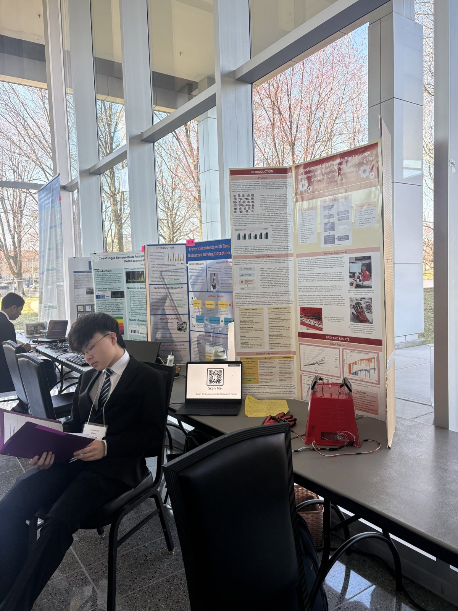
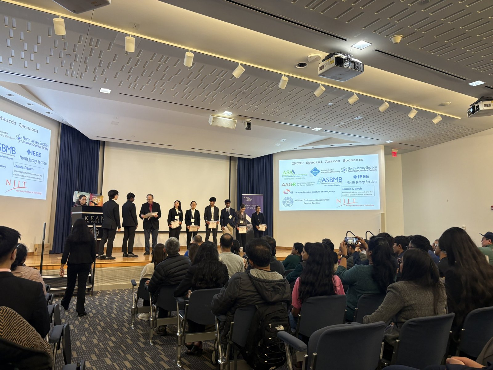
Touch the Curve, with the Bergen County Youth Assembly
Math graphs you read with your fingertips
A graph is one of the few things in a math class a blind student cannot simply be handed. Touch the Curve is my answer: 3D-printed graphs with a raised ridge for the function, textured grooves for the axes, and labels in Unified English Braille, each about the size of a postcard.
Printing one graph by hand is slow, so I wrote TactiGraph, a Python program that takes an equation and produces a printer-ready STL file. A teacher can type y = sin x and print it without me. The project is part of my work with the Bergen County Youth Assembly, a student civic group in Bergen County, New Jersey.
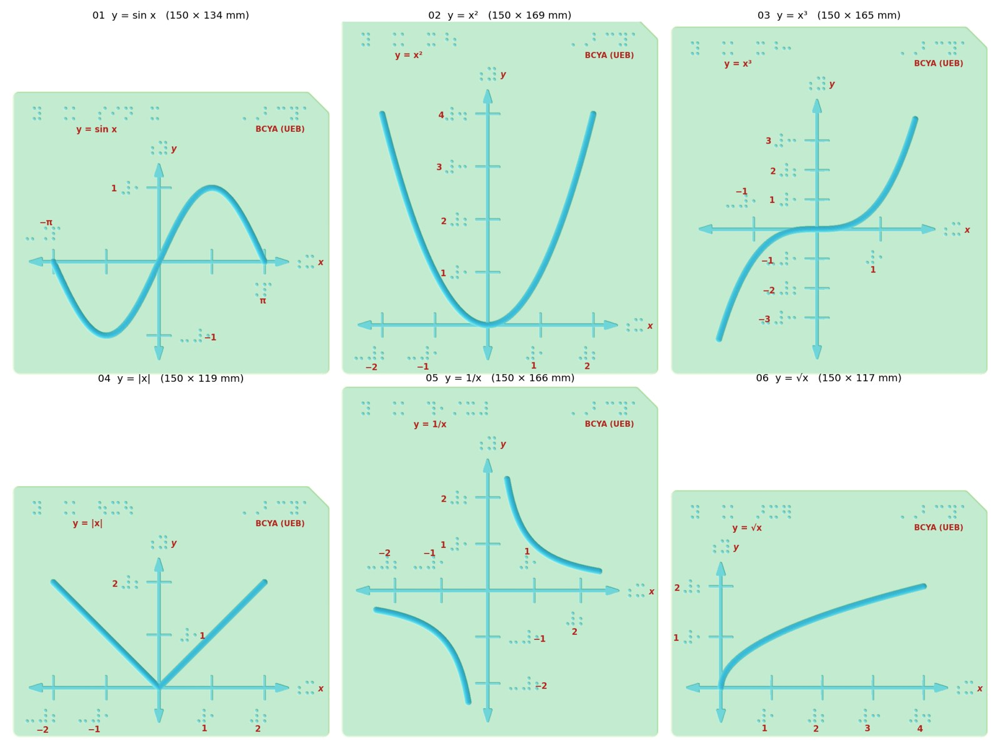
Voices of the Young
Mo Soop: an anonymous place for teens to talk
As Vice Director of Product Strategy at Voices of the Young, a student-run mental health organization, I direct the product strategy for Mo Soop, an anonymous peer-support app for teenagers that is live and in use. I also guided development of Mo Ri, a companion app with ADHD-friendly study guides and emotional-support tools, which launched on October 9, 2026.
During finals I ran the Finals Relief Project: we 3D-printed and donated 150 stress-relief devices, each one pointing the student who received it back to the app. It was the step that moved the organization from awareness messaging to a tool people actually open.
Finals Relief Project
- 150 stress-relief devices designed, 3D-printed, and donated
- Each device links the student to Mo Soop
- Mo Soop is live; Mo Ri launched October 9, 2026
Software
Shipping tools other people depend on
Intern, WellEd Labs
Twelve weeks at an edtech company in Palisades Park, New Jersey (November 2025 to January 2026, five hours a week). I worked in AppSheet and wrote Python APIs to update and process the application’s data, managed tasks in Asana, and worked with the team on the app’s user experience.
Software Engineering Intern, SP&SM STIP
At an architecture firm, over two years of part-time work, I built the internal time-tracking application staff use to log and manage hours across active projects. Shipping something a company depends on every day taught me more about requirements and edge cases than any class.
Robotics Club, River Dell High School
Three seasons on the build team, designing and engineering components of the school’s competition robot, and growing from a new member into one of the designers the team relies on.
Teaching, service, and leadership
The same idea, off the screen
New Jersey Korean School
Teaching assistant for two school years, more than 180 hours. Weekly language and culture lessons for younger students, and translator between students and teachers when the two sides could not quite reach each other. Recognized with the National Association for Korean Schools Junior Leadership Award (Gold Prize, 2025), a Bergen County Certificate of Commendation (2025), and a U.S. Senate Certificate of Special Congressional Recognition (2025).
Clothing Donations to Help Kids in the World
Vice President, Strategic Development. I built our hospital partnerships, including Hackensack University Medical Center, for a student group that has delivered more than $15,000 in new clothing to pediatric patients and their families.
Young Global Leaders of the East
Vice President, Research and Global Affairs. Co-led the 2nd Annual Global Leadership Forum on peace and international cooperation, ran a workshop series on advocacy and social entrepreneurship, and coordinated volunteers across three partner organizations, including Korean Heritage Night with the New York Mets.
Walk Alongside
Free tutoring and mentorship for students without private academic help, and a reusable set of learning materials in five subjects so the next tutor does not start from zero.
LiNK North Jersey Rescue Team
Awareness campaigns, educational outreach, and fundraising for North Korean refugees with the North Jersey chapter of Liberty in North Korea.
School
Secretary, Science National Honor Society. Senior officer in DECA, where I qualified for the state competition in my first year. Three seasons of tennis. Member of the National Honor Society, the National English Honor Society, and Tri-M Music Honor Society.
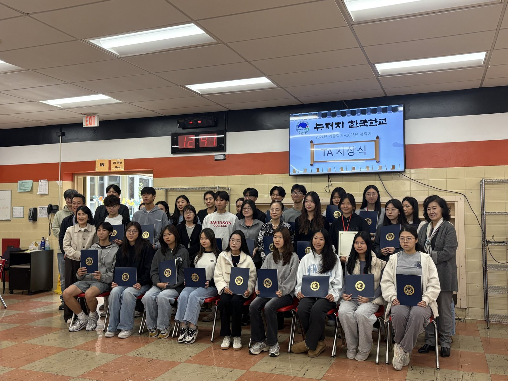
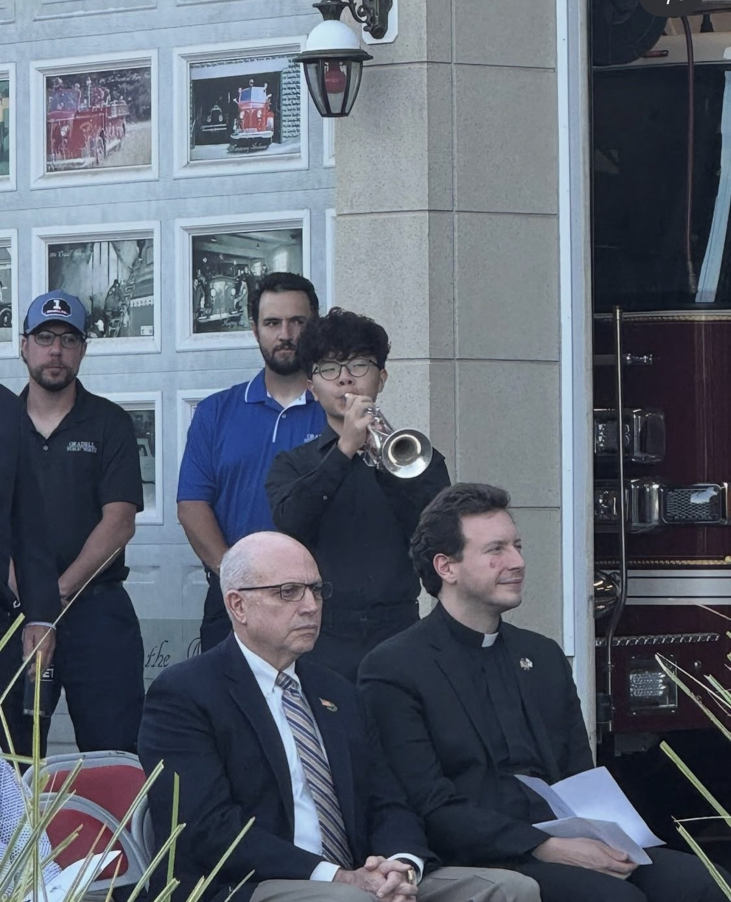
Music
Bass 2 and trumpet
I have been selected by statewide audition to the New Jersey All-State Mixed Choir twice and to the North Jersey Regional Choir three times, singing Bass 2. On trumpet I have been selected twice to the North Jersey Regional Band, and I am field captain of the River Dell marching band, my sixth year in the program.
In January 2024 I won first prize for trumpet at the East Coast International Competition and played in the winners’ recital at Weill Recital Hall, Carnegie Hall, and took first place for trumpet with the New York Classical Youth Orchestra, recognized by New York State Senator John C. Liu.
Ensembles
- NJ All-State Mixed Choir, two years
- North Jersey Regional Choir, three years
- North Jersey Regional Band, trumpet, two years
- River Dell Marching Band, field captain, grades 7 to 12
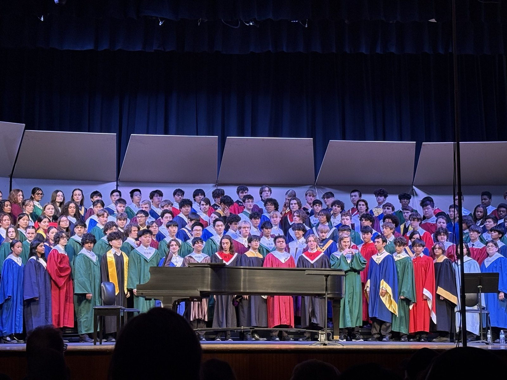
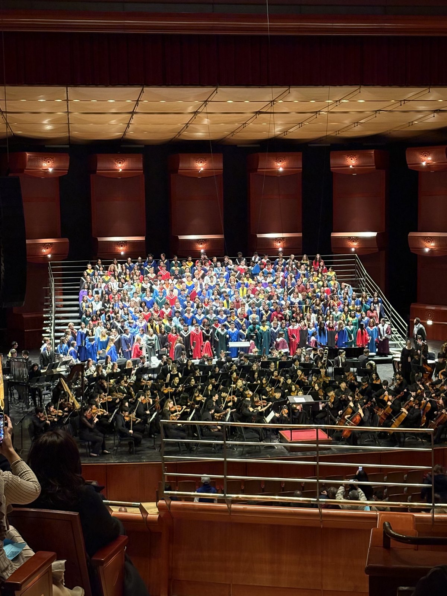
Honors
Recognition
- 2026Columbia University Science Honors Program, selected for the 2026 to 2027 academic year
- 2026IEEE North Jersey Section Young Engineer Award and Honorable Mention in Engineering, Terra North Jersey STEM Fair
- 2026Sole-author research paper, Current Journal of Applied Science and Technology, vol. 45, no. 8
- 2026Commendation, John Locke Institute Global Essay Prize, Science and Technology (shortlisted from the top 17.5% of 100,227 entries from 183 countries)
- 2026Silver Award, Level 4, National Spanish Exam
- 2025Certificate of Special Congressional Recognition for community service, U.S. Senator Andy Kim
- 2025Certificate of Commendation, County of Bergen, for volunteer service at the Korean School of New Jersey
- 2025Junior Leadership Award, Gold Prize, National Association for Korean Schools
- 2025Outstanding Achievement, Intermediate Division, American Computer Science League, 2024 to 2025
- 2024, 2025New Jersey All-State Mixed Choir, selected by statewide audition
- 2024First Prize, trumpet, East Coast International Competition, with the winners’ recital at Weill Recital Hall, Carnegie Hall
- 2024First Place, trumpet, New York Classical Youth Orchestra, recognized by New York State Senator John C. Liu
- 2024PCAP Certified Associate Python Programmer, Python Institute; Joy of Coding, University of Michigan ECE Continuum
- StateDECA New Jersey state competition qualifier, first year competing
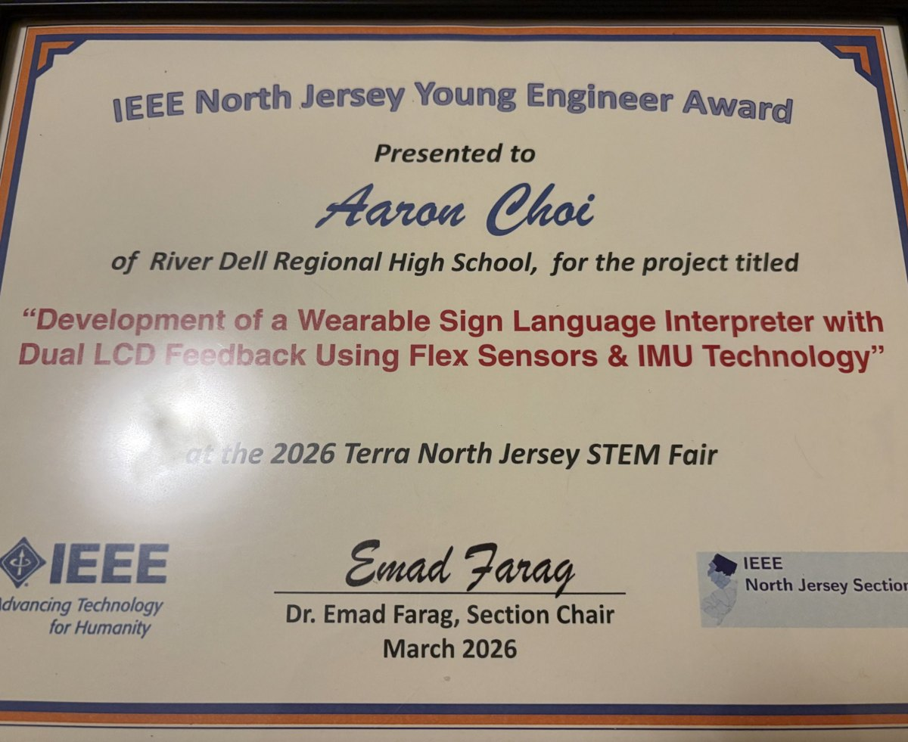
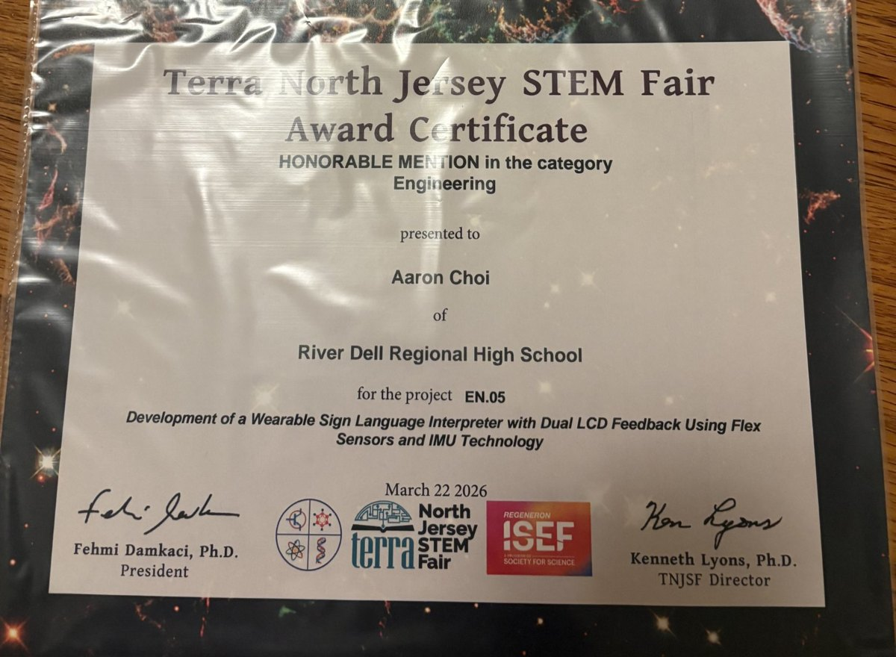
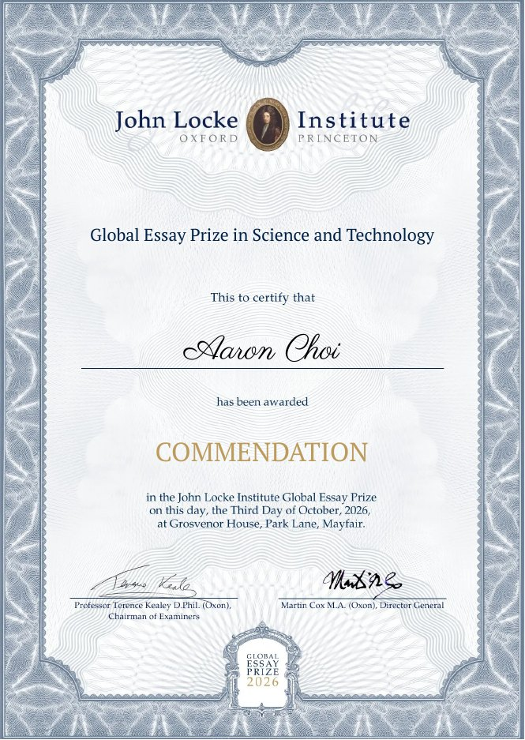
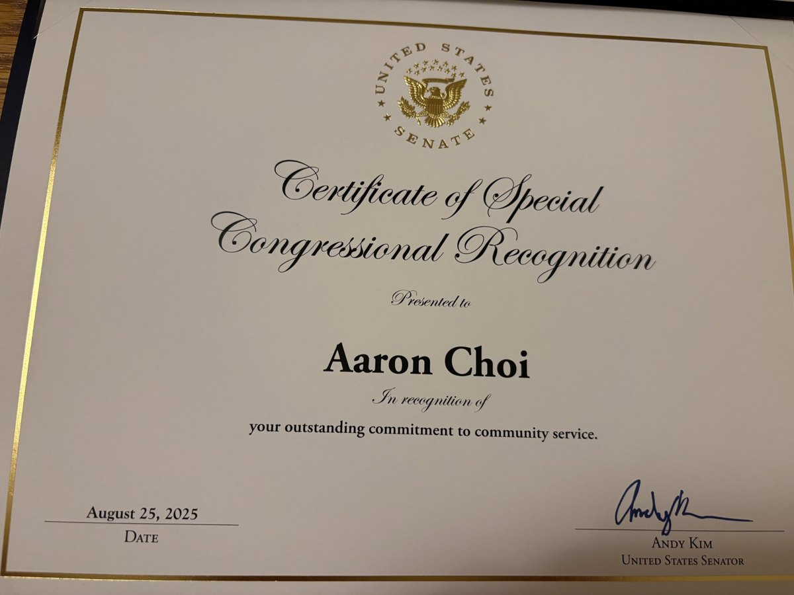
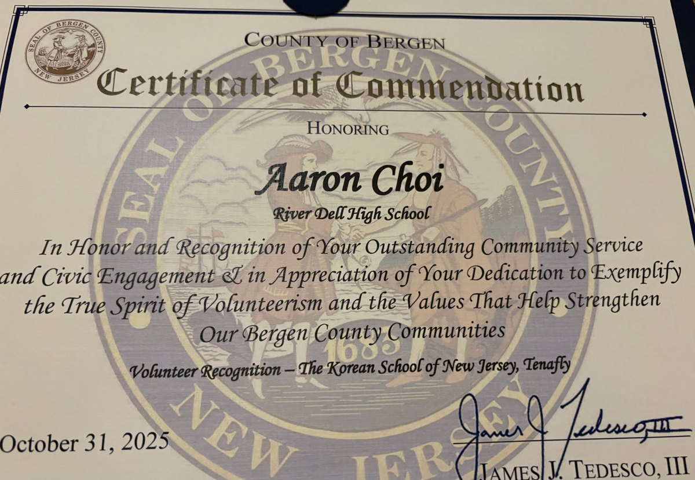
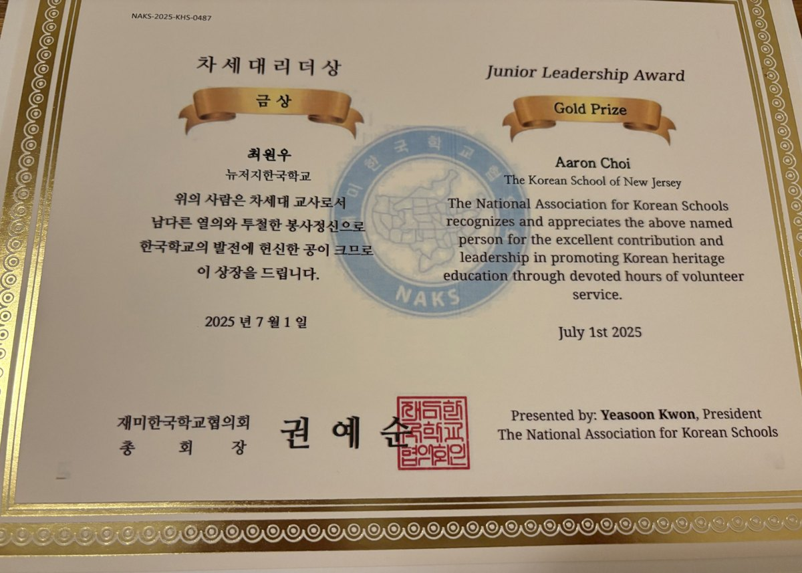
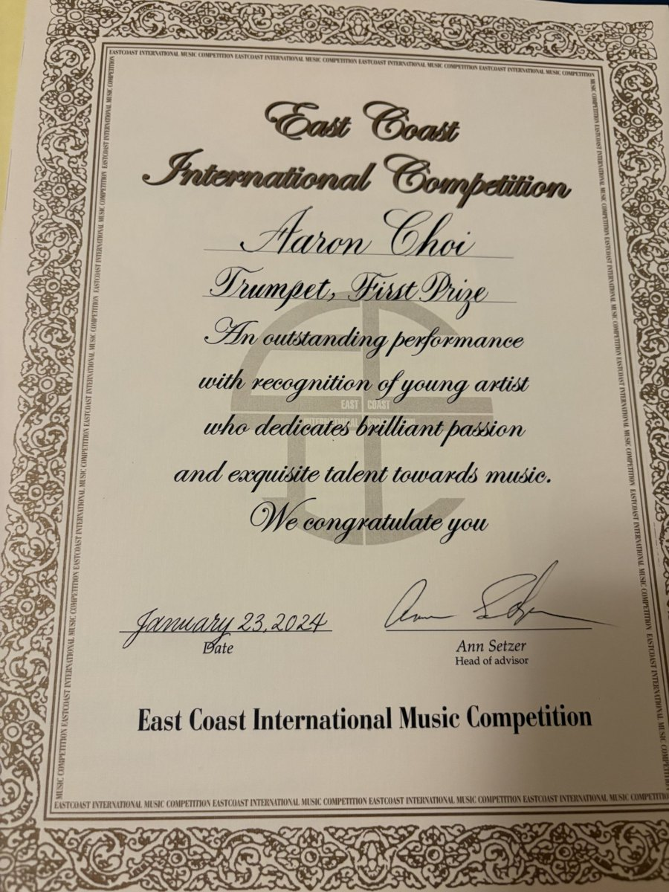
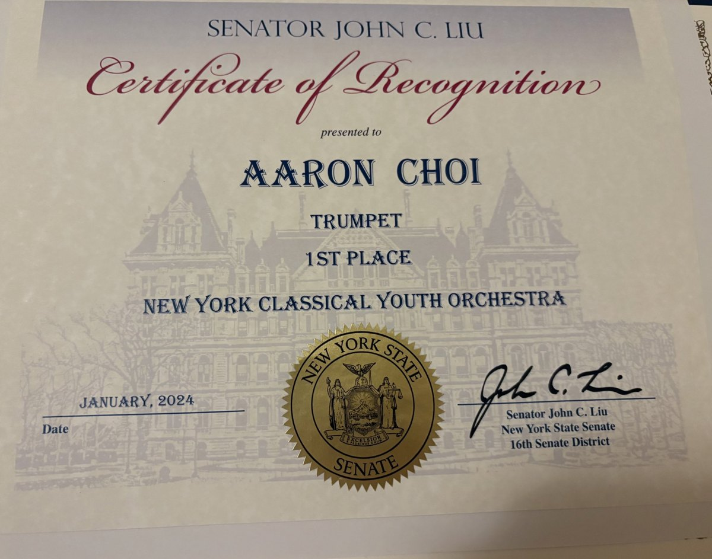
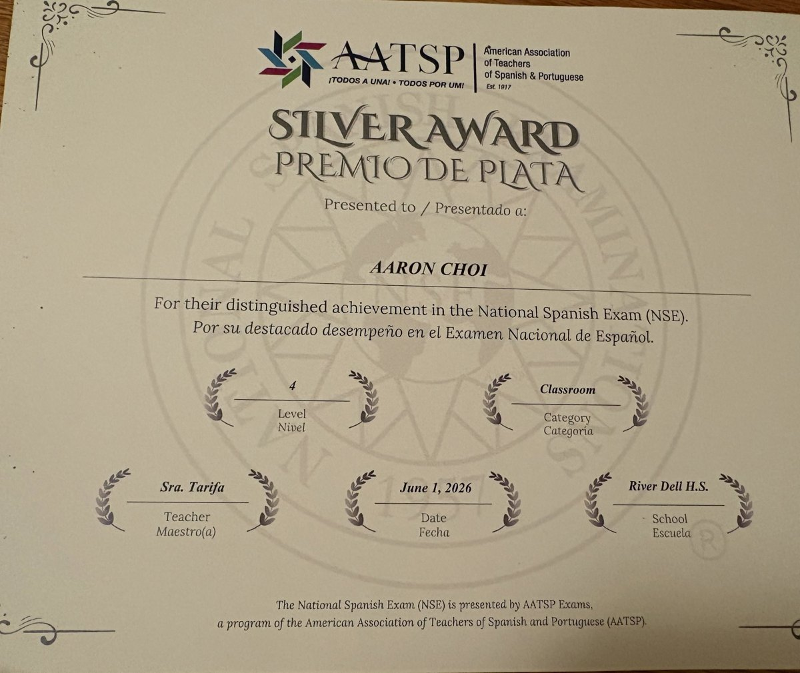
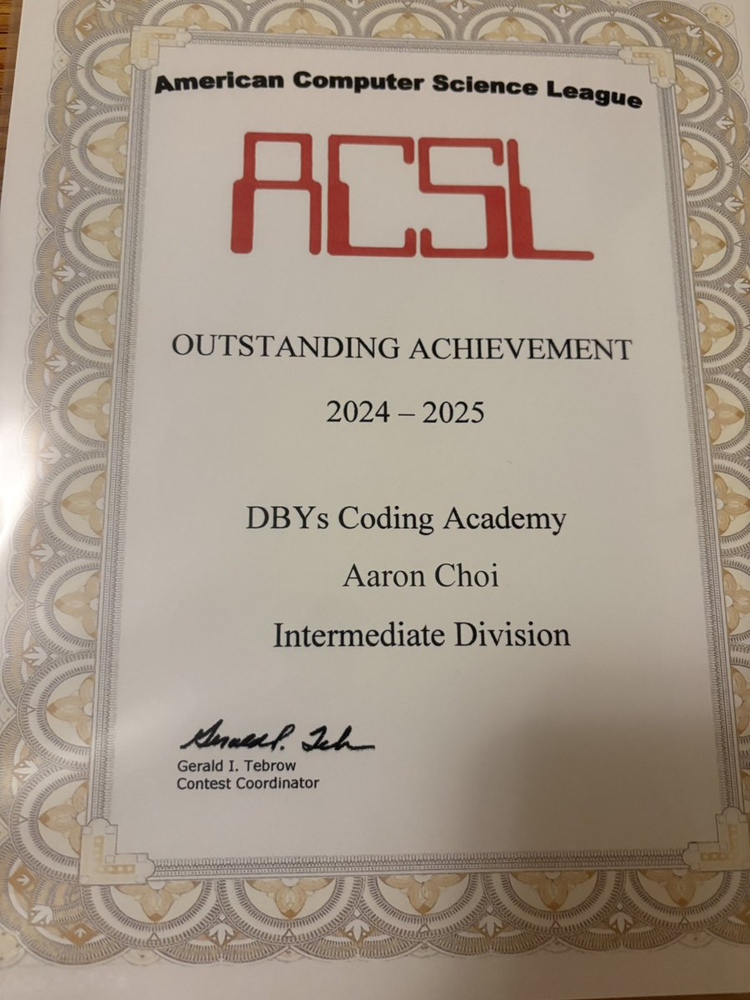
Contact
Say hello
I am happy to talk about the glove, the graphs, or how to print your own. Email me at aaronchoi202@gmail.com.